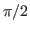

Comparison of contributions of Matsubara sums to the retarded formulation for
Hamaker coeffiecient,

. I choose to use [6,5], a
semiiconductor,
and [9,3], a semimetal, as examples. All caluclations are for identical pairs
of
CNTs in water with a mutual angle of
.
Equations correspond to those in version 4 of Rudi's report.